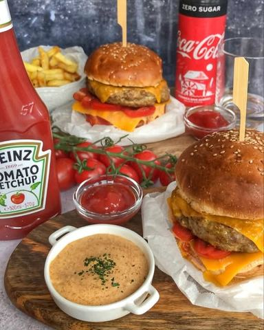

Moja beleška
SačuvanoJer #happyness ••• Recept ••Mere koje budem ispisala su dovoljne za dva burgera pa ih vi svakako povecajte u odnosu na broj ljudi kojima ih pripremate 🤗
Sastojci
Priprema
Smesa je jako lepa za oblikovanje, na dlanu sam oblikovala nešto veći krug od veličine zemicke jer se on prilikom pečenja malčice smanji. Sve sastojke sam prethodno pomešala, a sredinu sam napunila sa listom cedar sira(presavila sam ga na 1/4 kako mi prilikom pečenja ne bi iscureo) Takve sam ostavila neko vreme u frižideru. Pekla sam ih na nelepljivom tiganju na malčice ulja, ne dugo, i ne na prejakoj vatri, možda 10ak min (a ja ne volim da meso ostane živo, pa vi prilagodite vašem ukusu) Ovog puta nisam bila previše vredna pa sam zemicke za burgere kupila u #hlebikifle Pravim ih prvom sledećom prilikom kada Kalina ne bude sa nestrpljenjem čekala na svoju kasicu 😅 (ko voli lepo je i kada se doda sitno iseckan kiseli krastavcic i malčice crnog luka) •••••Na donji deo zemicke stavljala sam sos, malčice kecapa, paradajiz (ljudi obično vole iceberg salatu, ali naravno, ne i ja 🤗)list chedar sira, meso, preko vrelog mesa odmah još jedan list sira i ostatak zemicke. ••Pomfrit Kupovni, zamrznut, odavno ne przim u ulju već pecem u rerni. Rernu zagrejem na 250C, pomfrit poredjam po pek papiru tako da ne budu nabacani jedan na drugi kako bi se ravnomerno pekli. Ja volim kad se pomfrit dooobro osoli, pa u te svrhe koristim krupniju, morsku so. Pospem malo maslinovim uljem pa na 230C pecem 10ak min i onda smanjim na 200C poslednjih 5 minuta. I verujte mi na reč 🙌🏼 Javite mi koga ste usrecili 🤗😍💫 Prijatno 💫 #sogood #cocacolasrbija 😋
Originalni opis sa Instagrama
💫Homemade burgers💫 Ja sam oduševljena ovim burgerima, pa ću rado recept za pripremu podeliti da se usreci još neko ili da neko nekoga usreci 🙈 Jer #happyness ••• Recept ••Mere koje budem ispisala su dovoljne za dva burgera pa ih vi svakako povecajte u odnosu na broj ljudi kojima ih pripremate 🤗 ••Burger •300 gr svežeg junećeg mlevenog mesa •50 gr parmezana •kašičica/dve Heinz kecapa •kašičica senfa •1 žumance •2 lista chedar sira (ja sam koristila Paladin) •so, biber po ukusu Smesa je jako lepa za oblikovanje, na dlanu sam oblikovala nešto veći krug od veličine zemicke jer se on prilikom pečenja malčice smanji. Sve sastojke sam prethodno pomešala, a sredinu sam napunila sa listom cedar sira(presavila sam ga na 1/4 kako mi prilikom pečenja ne bi iscureo) Takve sam ostavila neko vreme u frižideru. Pekla sam ih na nelepljivom tiganju na malčice ulja, ne dugo, i ne na prejakoj vatri, možda 10ak min (a ja ne volim da meso ostane živo, pa vi prilagodite vašem ukusu) ••Zemicke Ovog puta nisam bila previše vredna pa sam zemicke za burgere kupila u #hlebikifle Pravim ih prvom sledećom prilikom kada Kalina ne bude sa nestrpljenjem čekala na svoju kasicu 😅 •••Sos •4 kašičice majoneza •2 kašičice senfa •kašičica aleve paprike •2 kašike pavlake •malčice maslinovog ulja (ko voli lepo je i kada se doda sitno iseckan kiseli krastavcic i malčice crnog luka) •so •••••Na donji deo zemicke stavljala sam sos, malčice kecapa, paradajiz (ljudi obično vole iceberg salatu, ali naravno, ne i ja 🤗)list chedar sira, meso, preko vrelog mesa odmah još jedan list sira i ostatak zemicke. ••Pomfrit Kupovni, zamrznut, odavno ne przim u ulju već pecem u rerni. Rernu zagrejem na 250C, pomfrit poredjam po pek papiru tako da ne budu nabacani jedan na drugi kako bi se ravnomerno pekli. Ja volim kad se pomfrit dooobro osoli, pa u te svrhe koristim krupniju, morsku so. Pospem malo maslinovim uljem pa na 230C pecem 10ak min i onda smanjim na 200C poslednjih 5 minuta. I verujte mi na reč 🙌🏼 Javite mi koga ste usrecili 🤗😍💫 Prijatno 💫 #homemadefood #homemadeburgers #madebyme #tastedelicious #lunchtime #dinnerideas #sogood #cocacolasrbija 😋